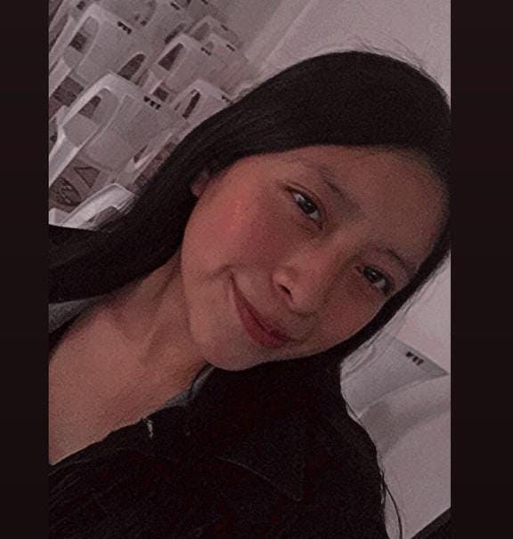

DATOS PERSONALES
EDUCACIÓN
EXPERIENCIA
REFERENCIAS
CATERIN ROSMERI BERNAL AGUSTÍN

**********************EDUCACIÓN************************
PRIMARIA:
Escuela Oficial Rural Mixta Villa Lovos Norte (2011-2017)
BASICOS:
Instituto Profecional de Computación IPC (2019-2021)
DIVERSIFICADO:
Instituto Profecional de Computación IPC (2022-2024)
Universidad San Carlos de Guatemala (2025-2027)